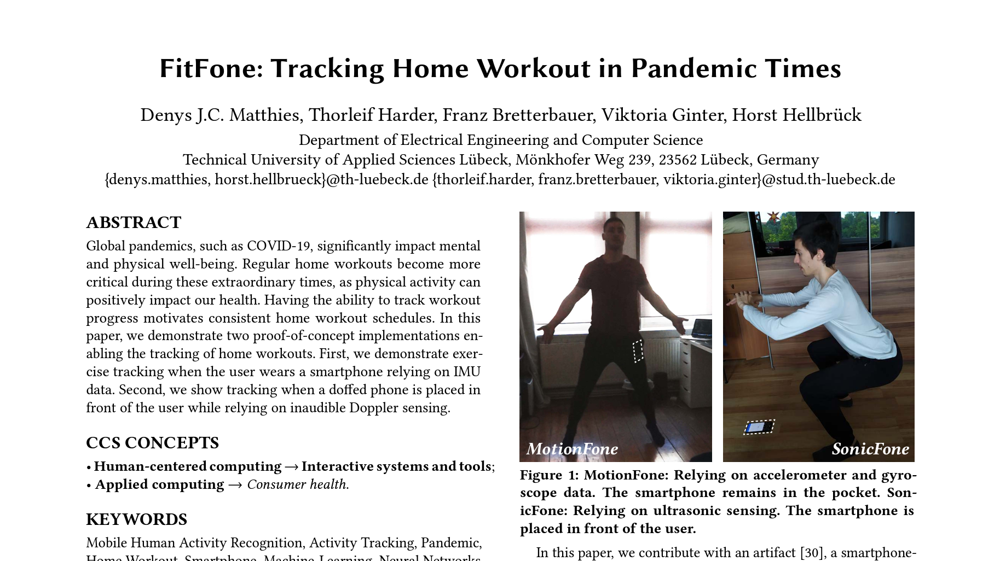

Download
Abstract
Global pandemics, such as COVID-19, significantly impact mental and physical well-being. Regular home workouts become more critical during these extraordinary times, as physical activity can positively impact our health. Having the ability to track workout progress motivates consistent home workout schedules. In this paper, we demonstrate two proof-of-concept implementations enabling the tracking of home workouts. First, we demonstrate exercise tracking when the user wears a smartphone relying on IMU data. Second, we show tracking when a doffed phone is placed in front of the user while relying on inaudible Doppler sensing.
Figure X: Figure caption

Citation
Denys J.C. Matthies, Thorleif Harder, Franz Bretterbauer, Viktoria Ginter, and Horst Hellbrück. 2021. FitFone: Tracking Home Workout in Pandemic Times. In Proceedings of the 14th PErvasive Technologies Related to Assistive Environments Conference (PETRA ‘21). Association for Computing Machinery, New York, NY, USA, 272–276. https://doi.org/10.1145/3453892.3461334
@inproceedings{10.1145/3453892.3461334,
author = {Matthies, Denys J.C. and Harder, Thorleif and Bretterbauer, Franz and Ginter, Viktoria and Hellbr\"{u}ck, Horst},
title = {FitFone: Tracking Home Workout in Pandemic Times},
year = {2021},
isbn = {9781450387927},
publisher = {Association for Computing Machinery},
address = {New York, NY, USA},
url = {https://doi.org/10.1145/3453892.3461334},
doi = {10.1145/3453892.3461334},
booktitle = {Proceedings of the 14th PErvasive Technologies Related to Assistive Environments Conference},
pages = {272–276},
numpages = {5},
keywords = {Smartphone, Activity Tracking, Neural Networks, Pandemic, Mobile Human Activity Recognition, Home Workout, Machine-Learning},
location = {Corfu, Greece},
series = {PETRA '21}
}